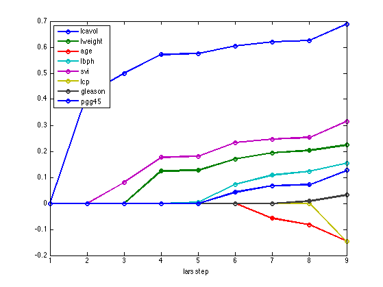
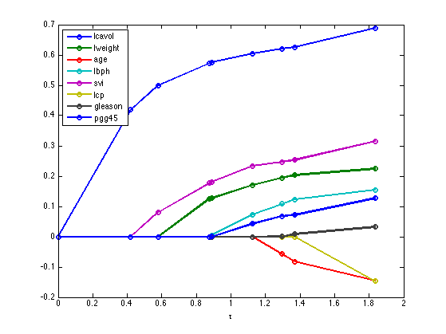
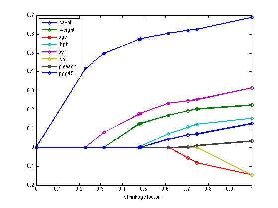
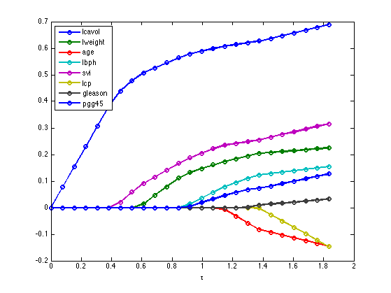
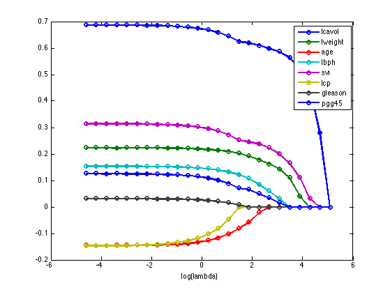

Contents
Plot the full L1 regularization path for the prostate data set
%PMTKauthor Mark Schmidt, Kevin Murphy % This file is from pmtk3.googlecode.com clear all load prostateStnd [N,D] = size(X); %#ok wOLS = X\y; tmax = norm(wOLS, 1);
First use LARS
wLars = lars(X, y, 'lasso'); %lambdas = recoverLambdaFromLarsWeights(X, y, wLars); figure; plot(wLars, '-o','LineWidth', 2); legend(names{1:end-1}, 'Location', 'NorthWest'); xlabel('lars step') printPmtkFigure('lassoPathProstateLars')
Now use tau formulation on tau values implied by lars
This is identical to lars
funObj = @(w)SquaredError(w,X,y); wL1 = zeros(D,1); options.verbose = 0; for i = 1:size(wLars,1) tau(i) = sum(abs(wLars(i,:))); funProj = @(w)sign(w).*projectRandom2C(abs(w),tau(i)); wL1 = minConf_PQN(funObj,wL1,funProj,options); weightsTau(i,:) = wL1; end figure; plot(1:9, weightsTau, '-o','LineWidth', 2); legend(names{1:end-1}, 'Location', 'NorthWest'); xlabel('lars step')
Now plot vs tau
Piecewise linearity is not so evident
figure; plot(tau, weightsTau, '-o','LineWidth', 2); legend(names{1:end-1}, 'Location', 'NorthWest'); xlabel('\tau') printPmtkFigure('lassoPathProstateTauLars')
Now plot vs shrinkage factor
Piecewise linearity is more evident
figure; plot(tau/tmax, weightsTau, '-o','LineWidth', 2); legend(names{1:end-1}, 'Location', 'NorthWest'); xlabel('shrinkage factor') set(gca,'xlim',[0 1]) printPmtkFigure('lassoPathProstateSfacLars')
Now plot vs dense tau
no longer looks piecewise linear
NL = 25; taus = linspace(0, tmax, NL); wL1 = zeros(D,1); funObj = @(w)SquaredError(w,X,y); options.verbose = 0; for i=1:length(taus) tau = taus(i); funProj = @(w)sign(w).*projectRandom2C(abs(w),tau); wL1 = minConf_PQN(funObj,wL1,funProj,options); wL1(abs(wL1) < 1e-4) = 0; weightsTau(i,:) = wL1; end figure; %sfac = taus/tmax; plot(taus, weightsTau, '-o','LineWidth', 2); legend(names{1:end-1}, 'Location', 'NorthWest'); xlabel('\tau') printPmtkFigure('lassoPathProstateTau')
Now plot vs dense lambda
Looks smooth, not piecewise linear. Axes are reversed.
lambdaMax = lambdaMaxLasso(X, y); lambdas = logspace(log10(lambdaMax), -2, NL); if 1 for i=1:NL lambda = lambdas(i); model = linregFit(X, y, 'lambda', lambda, 'regType', 'L1', 'preproc', []); weightsLam(i,:) = rowvec(model.w); end figure; plot(log(lambdas), weightsLam, 'o-', 'linewidth', 2); legend(names{1:end-1}, 'Location', 'NorthEast'); xlabel('log(lambda)'); printPmtkFigure('lassoPathProstateLambda') end if 0 for i=1:NL lambda = lambdas(i); tol = 1e-3; quiet = true; ww = l1_ls(X, y, lambda, tol, quiet); weightsLam(i,:) = ww(:)'; l1norm(i) = norm(ww,1); end figure; plot(l1norm, weightsLam, 'o-', 'linewidth', 2); xlabel('L1norm of w') end
Now use path algorithm + CV
if ~glmnetInstalled, return; end pp = preprocessorCreate(); options = glmnetSet(); %options.lambda = lambdas; %options.standardize = false; options.nlambda = 30; [bestModel, path] = linregFitPathCv(X, y, 'regtype', 'l1', 'preproc', pp,... 'options', options, 'nfolds', 5); figure; lambdas2 = rowvec(path.lambdas); plot(path.w', '-o', 'LineWidth', 2); legend(names{1:size(X, 2)}, 'Location', 'NorthEast'); hold on bestNdx = find(bestModel.lambda==lambdas2); verticalLine(bestNdx, 'linewidth', 2, 'color', 'r'); printPmtkFigure('lassoPathProstateCv')